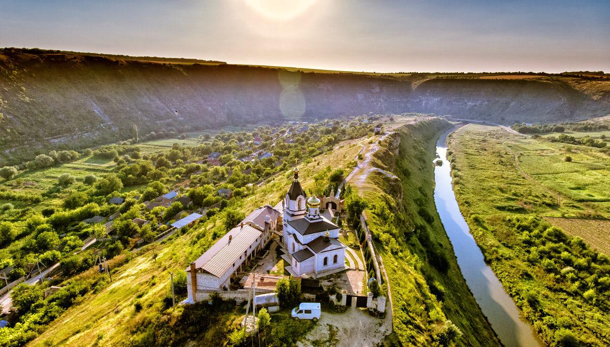
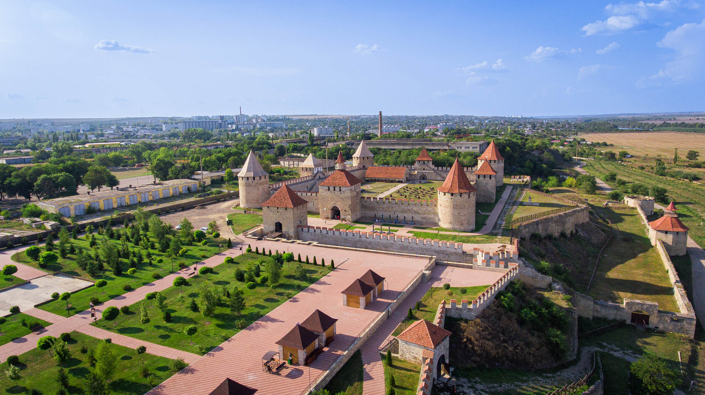
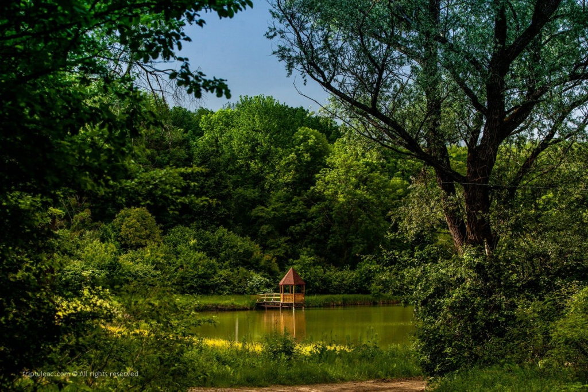
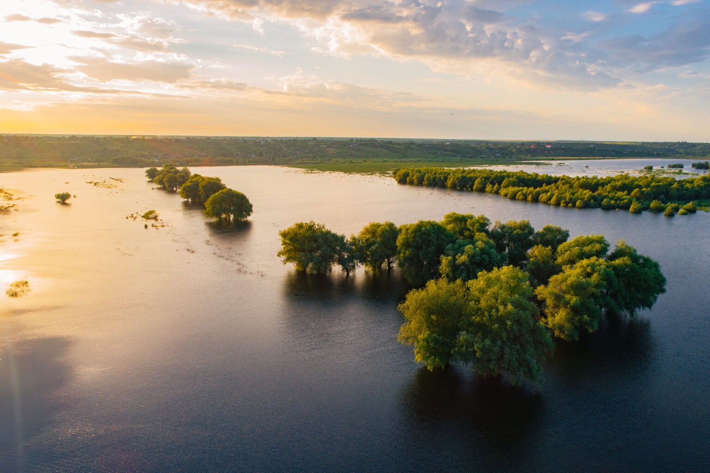
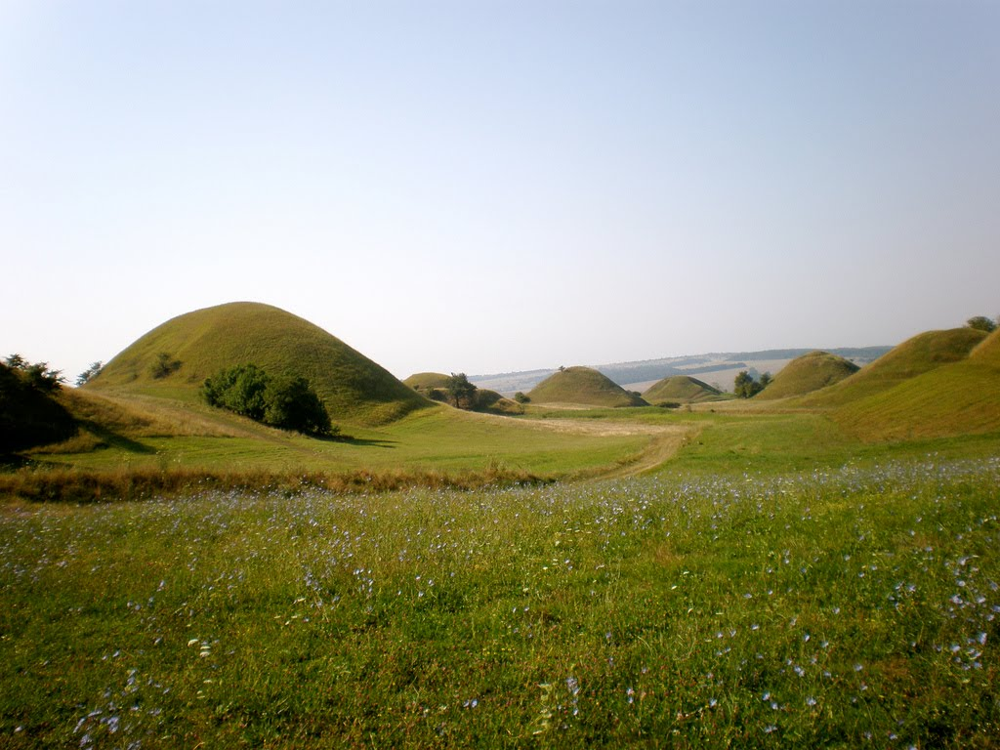
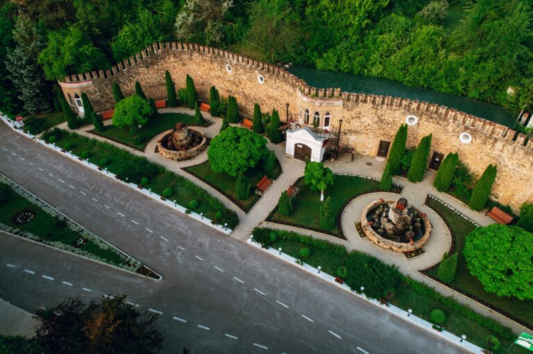

Top Landmarks in Moldova

Chisinau
The vibrant capital of Moldova, filled with parks, museums, and cultural landmarks.
Price: $35

Old Orhei
An ancient archaeological complex with stunning views and rich history.
Price: $80

Bendery Fortress
A historic fortress on the Dniester River, showcasing medieval architecture.
Price: $65

Forest Codri
The largest forest in Moldova, perfect for hiking and nature lovers.
Price: $20

Lake Beleu
A serene natural reserve, home to diverse flora and fauna.
Price: $50

100 Hills
It is assumed that these were necropolises of ancient tribal leaders, hundreds of mounds of soldiers who fell in battles.
Price: $30

Candle of Gratitude
The monument in Soroki is located on the slope between the Dniester River and the Bechir gorge.
Price: $30

Milestii Mici
The world's largest underground wine cellar, holding over 2 million bottles of wine.
Price: $70